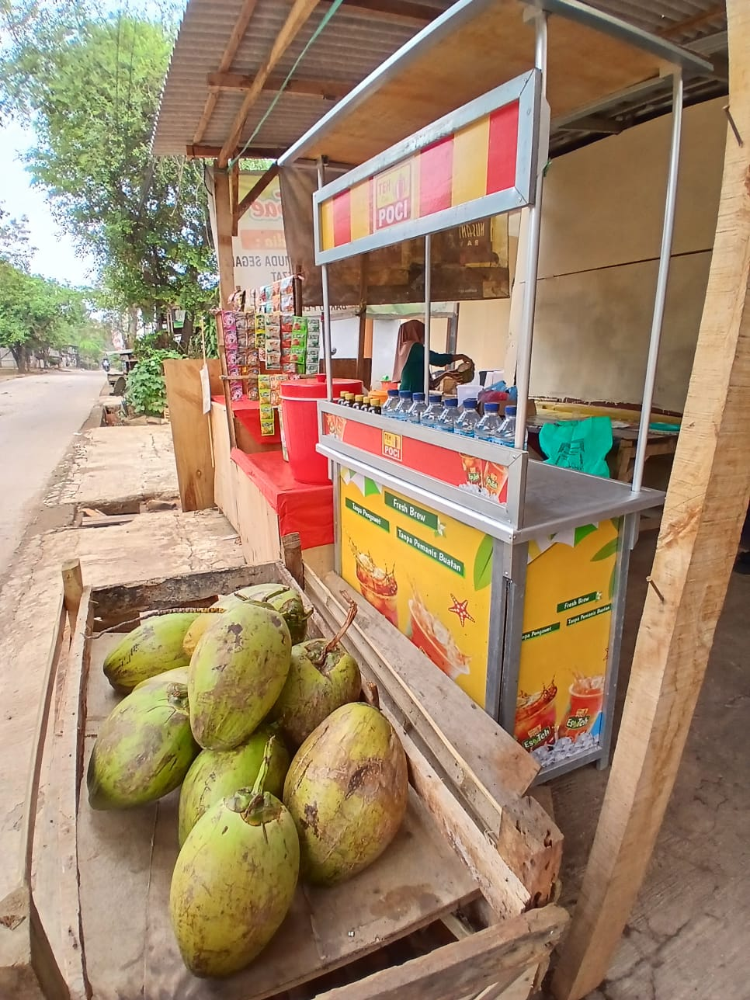

Sekali Seruput, Segarnya Bikin Nyangkut!
Selamat datang di website resmi Kedai Es Kelapa Mamah Sae. Kami merupakan usaha UMKM keluarga yang menyediakan aneka olahan kelapa segar dengan harga terjangkau.
Kami hadir untuk memberikan kesegaran bagi pelanggan melalui pilihan minuman kelapa yang nikmat dan menyegarkan. Kami juga terus berupaya mengembangkan produk agar pelanggan memiliki lebih banyak pilihan.

Beberapa produk yang kami sediakan antara lain es kelapa original, es kelapa gula merah, kelapa hijau asli, kelapa biasa, dan es kelapa dengan topping es krim.
Untuk melihat daftar produk beserta harga lengkapnya, silakan kunjungi halaman Produk Kami.
Kedai Es Kelapa Mamah Sae merupakan usaha yang ingin memberikan minuman segar dengan kualitas dan harga yang bersahabat bagi pelanggan.
Untuk mengetahui latar belakang usaha kami, silakan buka halaman Profil Usaha. Jika ingin mengetahui informasi kontak, silakan kunjungi halaman Kontak.